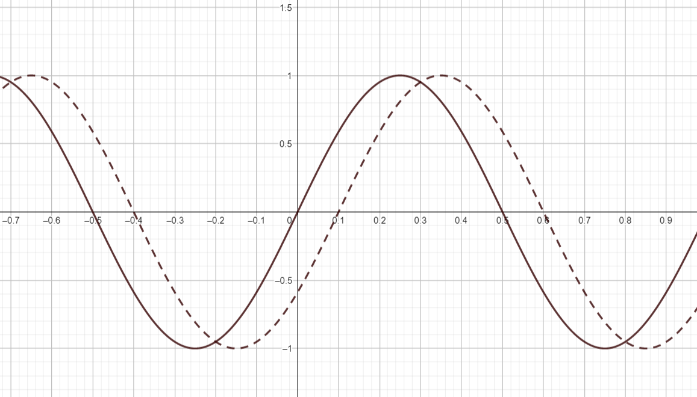

Sinifunktio
Contents
Sinifunktio#
Monet luonnossa ja laboratoriossa esiintyvät ilmiöt noudattavat ainakin likimäärin sinifunktiota. Sinifunktion kuvaaja on aaltomainen. Toisin sanoen funktion kuvaama suure vaihtelee toistuvasti minimi- ja maksimiarvojensa välillä. Muuttujana sinifunktiossa on yleensä kirjaimen \(x\) sijasta \(t\), joka viittaa aikaan (time). Esimerkiksi veden korkeus satamassa nousu- ja laskuveden vaihdellessa noudattaa sinifunktiota. Toinen esimerkki on pistorasiasta saatava vaihtovirta. Sähkövirran voimakkuus vaihtelee hyvin nopeasti, kunnes virta kulkee muuntajan läpi esimerkiksi tietokoneen virtalähteeseen.
Sinifunktion parametrit#
Yleinen sinifunktio on muotoa \(f(t)=A\sin{(\omega t-\phi)}+B\). Funktiot parametrit ovat seuraavat:
funktion arvon keskiarvo on \(B\)
amplitudi \(A\) kertoo funktion minimi- ja maksimipoikkeaman funktion keskiarvosta \(B\)
kulmataajuudesta \(\omega\) voidaan laskea, kuinka tiheästi funktion huippukohdat toistuvat
vaihe-ero \(\phi\) kuvaa sitä, kuinka paljon funktio poikkeaa vaakasuunnassa funktiosta \(\sin{\omega t}\)
Maksimikohtien (tai minimikohtien) välistä aikaa sanotaan funktion aallonpituudeksi \(\lambda\), ja se on yhteydessä kulmataajuuden yhtälön \(\lambda=\frac{2\pi}{\omega}\) mukaisesti.
Sinifunktion maksimiarvo saavutetaan, kun \(\sin{(\omega t-\phi)}=1\), sillä sinifunktio voi saada arvoja vain lukujen -1 ja 1 väliltä. Yksikköympyrältä voidaan päätellä, että arvo 1 saavutetaan, kun \(\omega t-\phi = \frac{\pi}{2}\). Tästä voidaan ratkaista yhden ajanhetken \(t\), jolloin funktio saa suurimman arvonsa. Muut huippuarvot seuraavat aallonpituuden välein tästä hetkestä. Vastaavasti minimiarvoja saavutetaan silloin, kun \(\omega t -\phi = -\frac{\pi}{2}\).
Vaihesiirto \(\phi\) ei suoraan tarkoita sitä, kuinka paljon funktion kuvaaja on vaakasuunnassa siirtynyt aika-akselin yksiköissä mitattuna. Alla olevan kuvan esimerkissä katkoviivalla piirretty käyrä \(g(t)\) tulee ajan \(T=0.1\) verran mustalla viivalla piirrettyä funktiota \(f(t)\) jäljessä. Kummankin käyrän huippukohtien välinen aika on \(\lambda=1\), joten kulmataajuus on kummallakin sinikäyrällä \(\omega=\frac{2\pi}{1}=2\pi\). Vaihesiirto saadaan laskettua yhtälöstä \(T=\frac{\phi}{\omega}\). Tässä esimerkissä vaihe-ero on siis \(\phi=\omega T = 2\pi \cdot 0.1 = 0.2 \pi = \frac{\pi}{5}\). Lisäksi vielä nähdään, että kummankin funktion keskiarvo on \(0\) ja amplitudi \(1\). Funktioiden lausekkeiksi saadaan siis \(f(t)=\sin{(2\pi t)}\) ja \(g(t)=\sin{(2\pi t -\frac{\pi}{5})}\).

Esim. Muodosta lauseke funktiolle \(f(t)=A\sin{(\omega t-\phi)}+B\), kun tiedetään, että funktion aallonpituus on 6, eräs maksimiarvo on 3 hetkellä \(t=2\), ja minimiarvo on -1.
Ratkaisu
\(B\) saadaan laskemalla funktion maksimi- ja minimiarvojen keskiarvo: \(B=\frac{3+(−1)}{2} = 1\).
\(A\) on suurin poikkeama keskiarvosta: \(A=3−1=2\) tai \(A=1-(-1)=2\).
Koska aallonpituus on \(\lambda = \frac{2\pi}{\omega}\), niin kulmataajuus on \(\omega=\frac{2\pi}{\lambda}=\frac{2\pi}{6}=\frac{\pi}{3}\).
Koska eräs sinifunktion maksimikohta esiintyy kulman arvolla \(\frac{\pi}{2}\), niin vaihe-ero voidaan ratkaista yhtälöstä \(\omega t-\phi = \frac{\pi}{2}\), siis \(\phi=\omega t -\frac{\pi}{2}\). Sijoittamalla lukuarvot saadaan \(\phi = \frac{\pi}{3}\cdot 2 -\frac{\pi}{2} = \frac{2\pi}{3}-\frac{\pi}{2}=\frac{\pi}{6}\).
Lauseke on siis \(f(t)=2\sin{(\frac{\pi}{3} t-\frac{\pi}{6})}+1\). Ratkaisun voi vielä tarkistaa piirtämällä yhtälöstä kuvaajan esimerkiksi GeoGebralla.